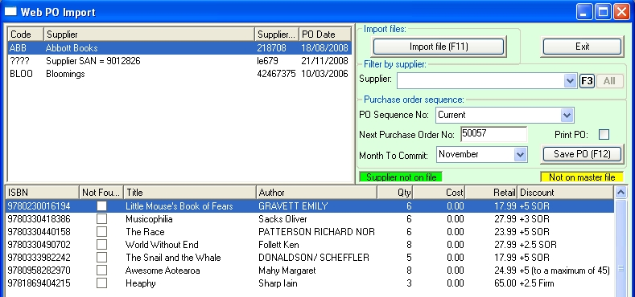
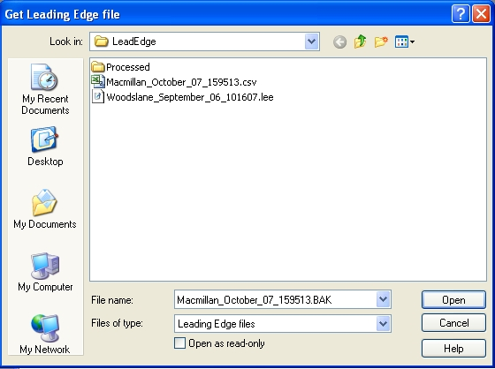

This section is for members of Leading Edge group who place their orders through the Leading Edge system and then download an import file from it's web/FTP site to then import that order (without having to re-key it)
Note: It is assumed that you have downloaded the Leading Edge Purchase Order file (e.g. Lonley_Planet_1234.Lee) from the leading Edge website and have saved it to an accessible place on your computer such as C:\e-Bilitydata\EDI\LeadEdge\.
Open the Purchase Order Import window from the main menu: Purchasing /Draft Order/Web PO Import.

Importing a Leading Edge file
Click the Import File (F11) button and navigate to the folder holding your Leading Edge import files.

Select the required file and click the Open button. The file will update two Bookscan tables: webpoline.dbf and webpohead.dbf. The order will be displayed in the browsers of the Purchase Order Import window.
Suppliers and SANs
Leading Edge orders files link to the suppliers in Bookscan using the supplier's SAN. So you need to have SANs set up for each supplier in the Address tab of your supplier master.
If you don't have a SAN set for a supplier, the Purchase Order Import window will display '????' in the code column of the upper browser. For an example see the second line in the PO Import window diagram above. SAN 9012826 needs to be added to the supplier's SAN field. You will need to fix this before proceeding. Open the supplier master and enter the missing SANs. Then, back in the PO Import window use the right mouse to open the context menu and select 'Update suppliers'. The browser will now display correctly.
Products not on file
If any lines in the lower browser are shown in yellow, it means that the product is not in Bookscan. To add products to the master file, highlight them in the browser and open the context menu (by right clicking the mouse) and select 'Add selected ISBNs'. The products will be added to the master with these fields completed: ISBN, title, author, sell price, RRP and supplier.
All items must be in the title master before you can create an Bookscan purchase order.
Select a purchase order number
The Next PO number field will display the next available PO number. You can change the PO sequence here if you wish, and set a budget month if you use the budgeting functionality. Tick the check box to print the purchase order as it is created.
Creating the purchase order
In the upper browser, highlight the order you wish to process into Bookscan.
Click the Save PO (F12) button to process it.
The purchase order will be created and will be displayed like any other purchase in the Purchasing Order Enquiry window.